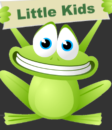

Learn how reducing, reusing, and recycling can help you, your community, and the environment by saving money, energy, and natural resources. Recycling programs are managed at the state and local level—find information on recycling in your community. On the national level, EPA is working to build an economy that keeps materials, products, and services in circulation for as long as possible, what's known as a “circular economy.”
We are professional waste management service provider. Our aim is to help home makers by collecting their wastes and segregating them into different types of waste and recycle the products. However we also deal in business and industrial wastes.
sfwef
